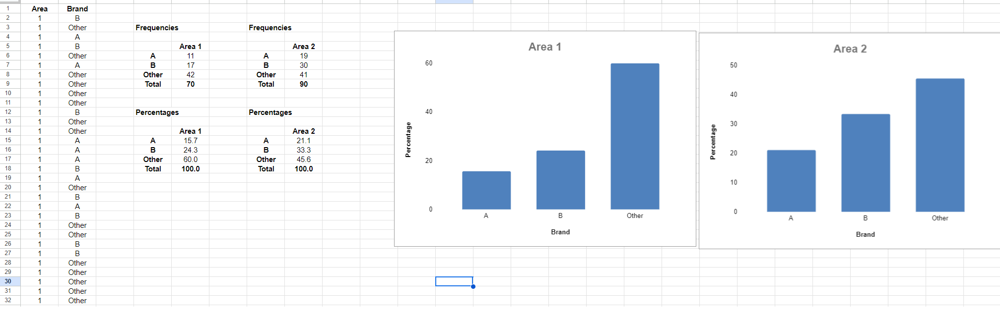
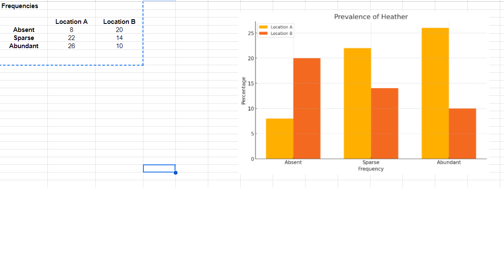
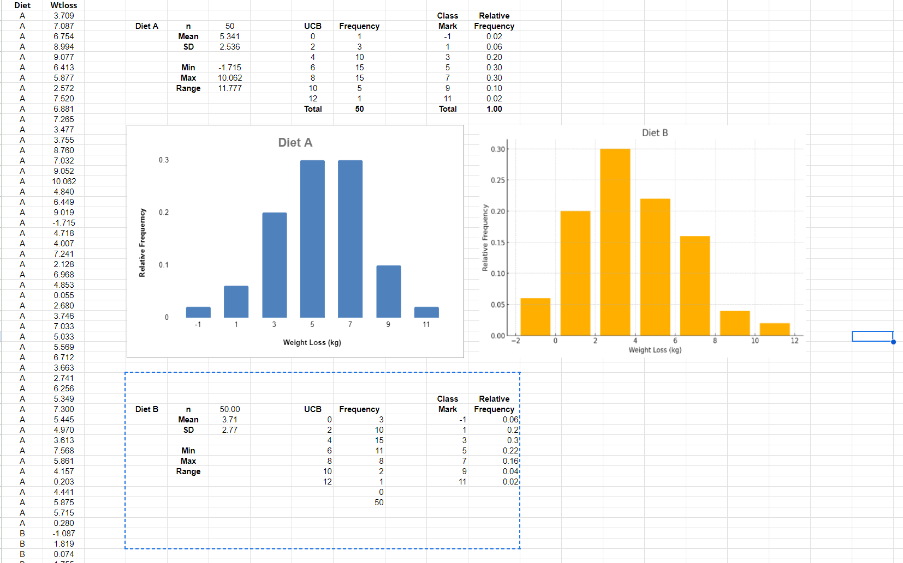

Unit 9 Charts Worksheet
Below is a screenshot of my results from the worksheets.
Description: I have created bar charts for two analyses:
- Heather Species Prevalence: The comparison shows that Location A is more favorable for heather growth, with significantly more abundant transepts than Location B, where the species is mostly absent.
- Diet A vs. Diet B Weight Loss Comparison: Diet A shows more consistent weight loss results, with most participants losing between 6-8 kg. In contrast, Diet B has more variability, with a wider range of weight loss and even some instances of weight gain.
These insights highlight how different conditions and approaches can yield varying outcomes. For example, Location A's better environment for heather and Diet A's greater weight loss effectiveness can inform strategic decision-making.
Brand Preferences in Area 1 and Area 2: I have compared the brand preferences in two demographic areas, as shown below:
- In **Area 1**, **Brand A** holds a 15.7% preference, while **Brand B** stands at 24.3%. The **Other** category dominates with 60.0%, indicating a preference for alternative brands.
- In **Area 2**, **Brand A** improves slightly to 21.1%, and **Brand B** leads with 33.3%. The **Other** category remains significant at 45.6% but is less dominant than in Area 1.
Conclusion: **Brand B** is the overall favorite, especially in **Area 2**, while the **Other** category shows strong potential, particularly in **Area 1**, indicating that alternative brands may capture a larger share of the market.
  